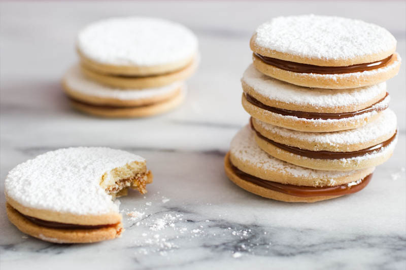

Alfajor:
Ingredientes
- 2 colheres de chá de farinha de trigo
- 1/2 xícara de chá de açúcar
- 1 colher de sopa de essência de baunilha
- 2 colheres de sopa de água
- 250g de doce de leite pastoso
- 500g de chocolate ao leite
- 200g de manteiga

Modo de preparo
- Misture a manteiga, o açúcar e a essência de baunilha. Acrescente aos poucos a farinha e a água, sempre mexendo bem até ficar homogêneo.
- Coloque a massa em um refratário untado com manteiga e leve ao forno pré-aquecido em 180ºC por 10 minutos ou até dourar.
- Espere esfriar e corte a massa no formato que deseja fazer cada alfajor.
- Recheie com o doce de leite, fazendo um sanduíche.
- Derreta o chocolate ao leite em banho maria ou no microondas (sempre de 30 em 30 segundos) e mergulhe cada alfajor nele.
- É só esperar esfriar para o chocolate secar, e eles estarão prontos!